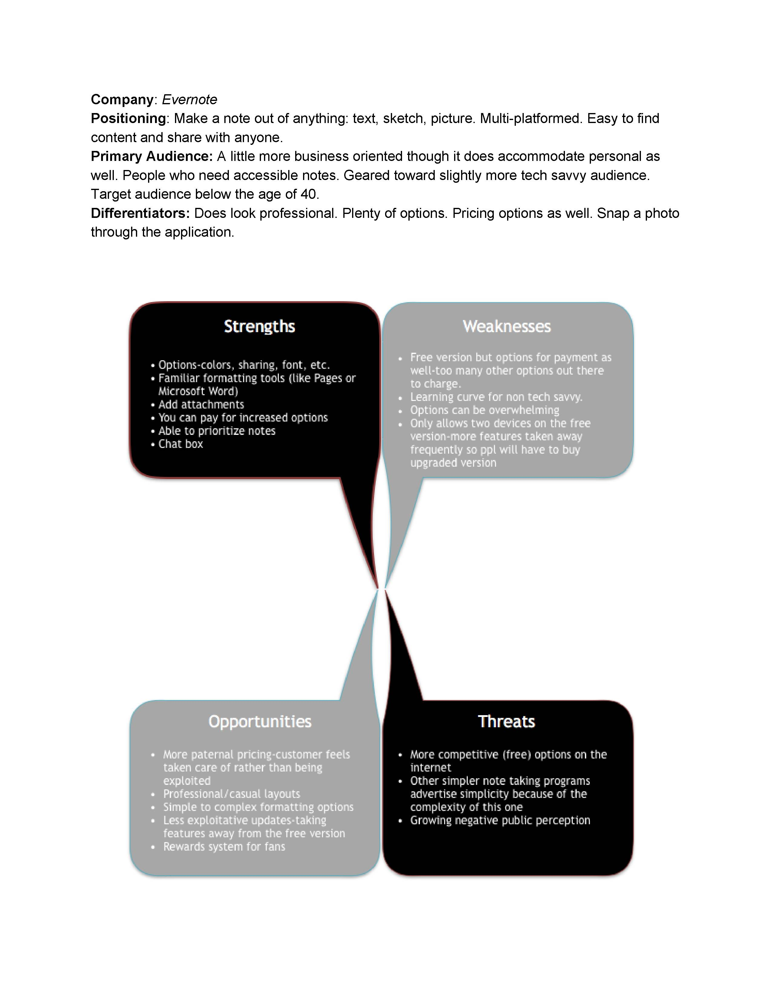

CollaborMate
2016 - UX/UI Designer & Front-End Developer

From the onset, this project had two goals -one personal and one practical. My personal goal was to dissect and understand the design process from beginning to end to be able to conceptualize and present a materialized product. The practical aim of the project was to create a platform for multiple users to share multiple types of media in order to collaborate on a project. CollaborMate set out to help people on a project but CollaborMate helped me learn how to develop a project.
My design team and I were brought on board to become acquainted with project development by creating a stylish simple way for teams to collaborate on projects in a digital space. The goal was to the learn the ins and outs of design and working as a team to accomplish a goal while also building a space for others to do the same. In a world becoming more and more digital, it’s increasingly difficult to work as a team on projects if you don’t have a digital space to store all your media files and share them so they can be accessed from anywhere, anytime.
My solution was to conduct a SWOT analysis of our competitors (Google Drive, Evernote, SimpleNote) and then figure out a branding strategy that would appeal to users. I conducted surveys to discover who the primary users were and what was most important to them. With limited experience, my solution was to listen to industry experts, websites that are working, and users to figure out how to structure the website. I then conducted several interviews and created personas to help guide me in my design process.
Swot of EverNote
Persona 1

Persona 2

With the audience defined, I came up with a lot of intricate and detailed logo designs but quickly learned it was too taxing on the eyes because of complicated visuals. This weakened the brand identity. Additionally, I needed to recognize the importance of keeping the logo simple for the sake of scalability. Logos need to fit on multiple surfaces so they have to be ablity to scale down and up with ease. Because of this I needed to eliminate all the colors too because black and white is the most basic way to view a logo on multiple surfaces, especially if those surfaces are colored.
Brainstorming
More Brainstorming
Chosen Logo
With a user-first model I needed to get into the mind of users to see how colors communicated meaning to them. Knowing this information would help me to choose a color palette that would allow our users to feel comfortable using the site. I started with bright colors but quickly discovered they didn’t provide the site with the professional feel it was going for, so I ended up with the darker blues.

User Feedback: Colors Too Bright

User Feedback: Not Professional

Final Draft
Keeping one eye on the audience, it was time to develop the site with them in mind. My methodology was to begin with user stories to define the expectations of users, followed by diagrams of the site and pages the user would find expected info. With this blueprint defined, I developed low fidelity mockups to begin the visualization of each page. Once I was satisfied with the layout, I tested and adjusted the layout against user feedback. Finally, I developed high fidelity mockups of the site.
Sign Up Flow

Sign Up 1st Draft

Sign Up Final Draft

Home Page Flow

Low Fidelity of Home Page

1st High Fidelity of Home Page

Final Draft of Home Page

Through wireframing, mockups, and user feedback, I discovered where to best position the call-to-action buttons. Moreover, I smoothed out the site's hierarchy. If everything looked important then nothing looked important. As a result I learned how to properly position the content to attract the eye and give the user a focal point to begin digesting information.
User Feedback of Feature Section: Visuals Too Distracting

2nd Draft of Feature Section

Balsamiq Mockup of Price Chart

High Fidelity Mockup of Price Chart After Feedback

What worked? I designed a functional static site and achieved the goal of developing a project from start to finish. UX research helped me improve my mockups and branding for each iteration.
What didn't work? I learned that sticking to simple guidelines produced a generic-looking website that didnt’t look as compelling as I would have liked.
Any surprises? User feedback is more valuable that I anticipated. It identified not only areas of opportunity but also areas of my natural talent.
Learning lessons: I went from being unfamiliar with both the programs and processes of design to becoming acquainted with programs such as AI, PS, and Sketch. I learned about hierarchy, color palettes, typography, personas, user stories and all the other wonderful aspects that come into play in UX/UI and frontend development. This project provided a platform for me to increase our expertise.